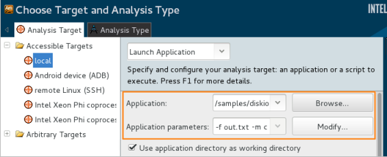

When you application is ready for analysis, create
a VTune Amplifier project to specify your analysis target and run the data
collection.
When you application is ready for analysis, create
a VTune Amplifier project to specify your analysis target and run the data
collection.
To run the analysis:
Launch the VTune Amplifier with root privileges: From the <install_dir>/bin64 directory, run the amplxe-gui script launching the VTune Amplifier GUI.
Create a VTune Amplifier project:
From the menu, select New > Project....
The Create a Project dialog box opens.
In the dialog box, specify the project name diskio that will be used as the project directory name and click Create Project.
VTune Amplifier creates the diskio project directory under the root/intel/ampl/projects directory and opens the Choose Target and Analysis Type window.
Configure your analysis target:
From the left pane on the Analysis Target tab, select the Accessible Targets > local target system.
From the right pane, select the Launch Application target type and specify your target as follows:
For the Application field, browse to: <sample_code_dir>, for example: /home/samples/diskio/diskio.
In the Application parameters field, specify the following parameters for this target: -f out.txt -m c.

Select and run the analysis:
Click the Choose Analysis button on the right to select an analysis type.
The Analysis Type tab is active.
From the left pane, select Platform Analysis > Disk Input/Output Analysis.
The right pane is updated with the predefined settings for the Disk Input/Output analysis.
Click the Start button on the right.
Note
The Disk Input and Output analysis actively relies on the data produced by the kernel block driver system. In case your platform utilizes a non-standard block driver sub-system (for example, user-space storage drivers), disk metrics will not be available in the analysis type.
Almost all Disk I/O metrics collected by the VTune Amplifier are system-wide (except for the I/O API calls that are attributed to a process). So when collecting the data, the VTune Amplifier automatically enables the Analyze system-wide target configuration option.
VTune Amplifier launches the diskio application in the system cache mode so that the application asynchronously writes records (16 Byte) to the output file out.txt, using the system file cache, and exits. VTune Amplifier finalizes the collected results and opens the analysis result in the Disk Input/Output Analysis viewpoint.
To make sure the performance of the application is repeatable, go through the entire tuning process on the same system with a minimal amount of other software executing.
Note
This tutorial explains how to run an analysis from the VTune Amplifier graphical user interface (GUI). You can also use the VTune Amplifier command-line interface (amplxe-cl command) to run an analysis. If you run the sample program from the VTune Amplifier command-line interface, enter:
$ amplxe-cl -collect disk-io -app-working-dir /home/samples -- /home/samples/diskio -f out.txt -m c
For more details, check the Command-line Interface Support section of the VTune Amplifier Help.
Recap
You launched the VTune Amplifier as root, created a project, specified the sample application as an analysis target and ran the Disk Input and Output analysis using the system file cache application mode.